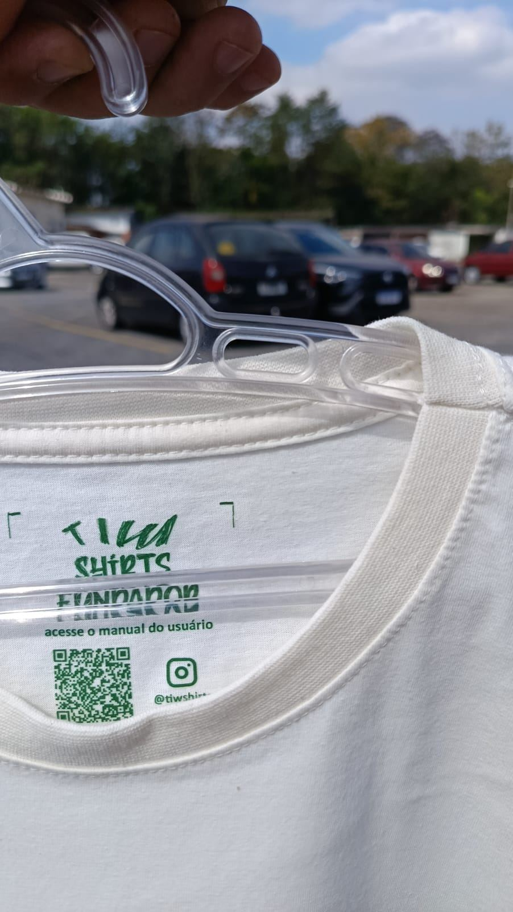
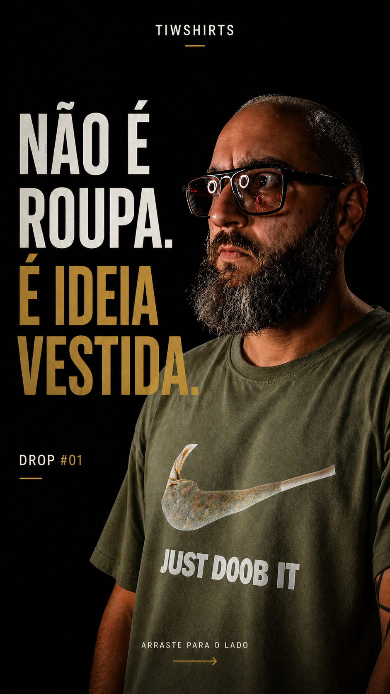
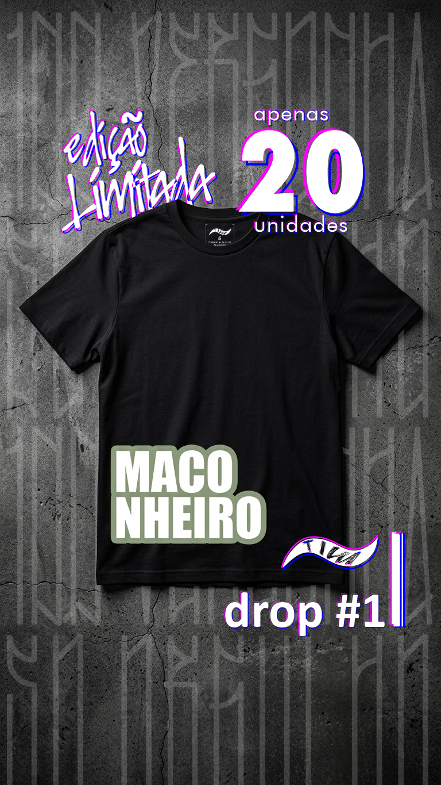
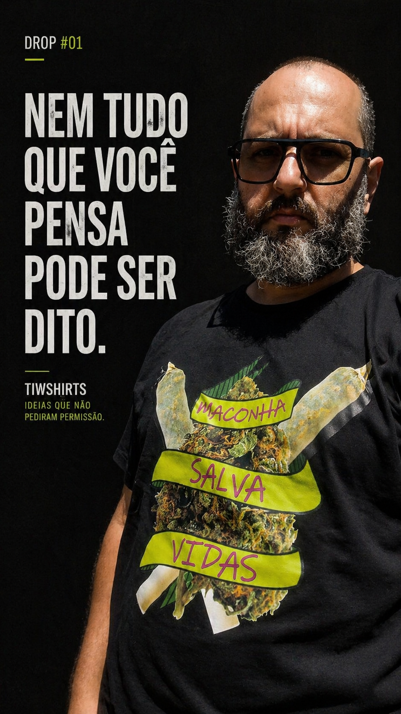

02 · PRODUTO & ACABAMENTO
Construção física, texturas e unboxing exclusivo.
A densidade têxtil valida o posicionamento de grife independente. Eduardo estruturou três experiências de corte e vestimenta, combinando embalagens que ressignificam o ato da compra.

DENSIDADE 230G
Malha Suedine Peach Skin

REFORÇO ESTRUTURAL
Costura Ombro a Ombro

ACESSO AO MANUAL
Etiqueta com QR Code

R$ 139,00
Classic — Algodão 30.1
Corte reto clássico (~160 g/m²). Toque penteado nobre, gola firme e alta resistência para o dia a dia.
Ritual de Posse: Entregue no Pote Hermético de Vidro (600ml), reutilizável para cura e preservação botânica.

R$ 179,00
Oversized — Suedine 230g
Malha pesada de alta densidade tátil. Ombros caídos, corte boxy e gola canelada encorpada de 2,8cm.
Ritual de Posse: Acondicionada em Embalagem Cilíndrica Rígida Hermética de grande capacidade.

R$ 179,00
Plus Size — G1 ao G3
Modelagem ampla real projetada do zero. Conforto anatômico no tórax e braços sem repuxar a gola.
Ritual de Posse: Tubo rígido industrial colecionável mantendo a malha impecável no unboxing.
Campanhas no Instagram e viabilidade comercial para lojistas.
A marca foi pensada de ponta a ponta: do debate cultural no feed (@tiwshirts) à política comercial com markup de 2.01x para tabacarias premium, skateshops e multimarcas.



Lâmina Comercial de Atacado
Apresentação executiva detalhando o modelo híbrido, kits Starter Mix (a partir de 15 peças), tabela de preços e 101% de margem no balcão.
Catálogo Oficial de Coleção
Fichas técnicas das malhas, tabelas de medidas das três modelagens (Classic, Oversized, Plus Size) e diretrizes de conservação têxtil.